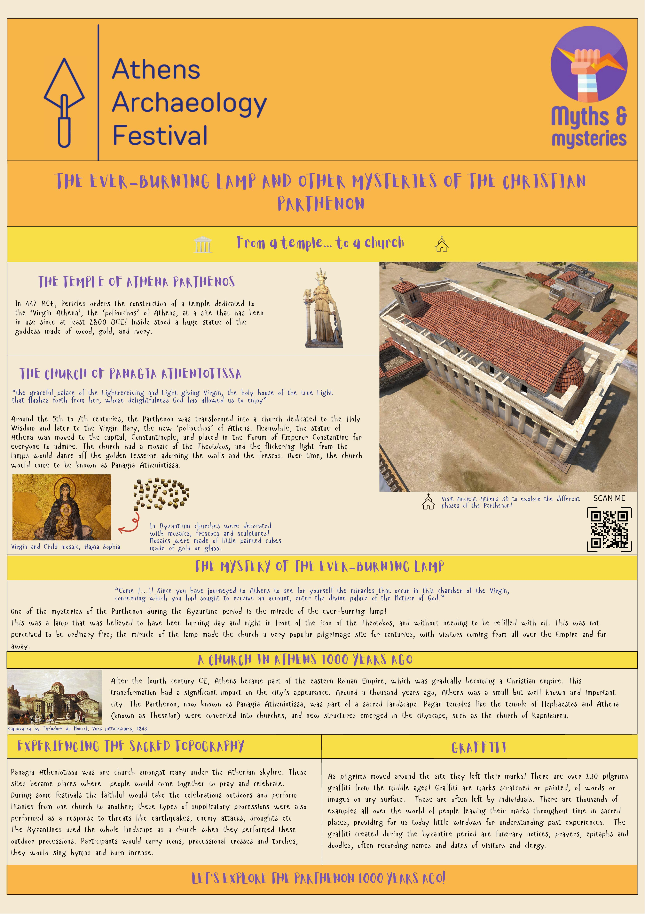
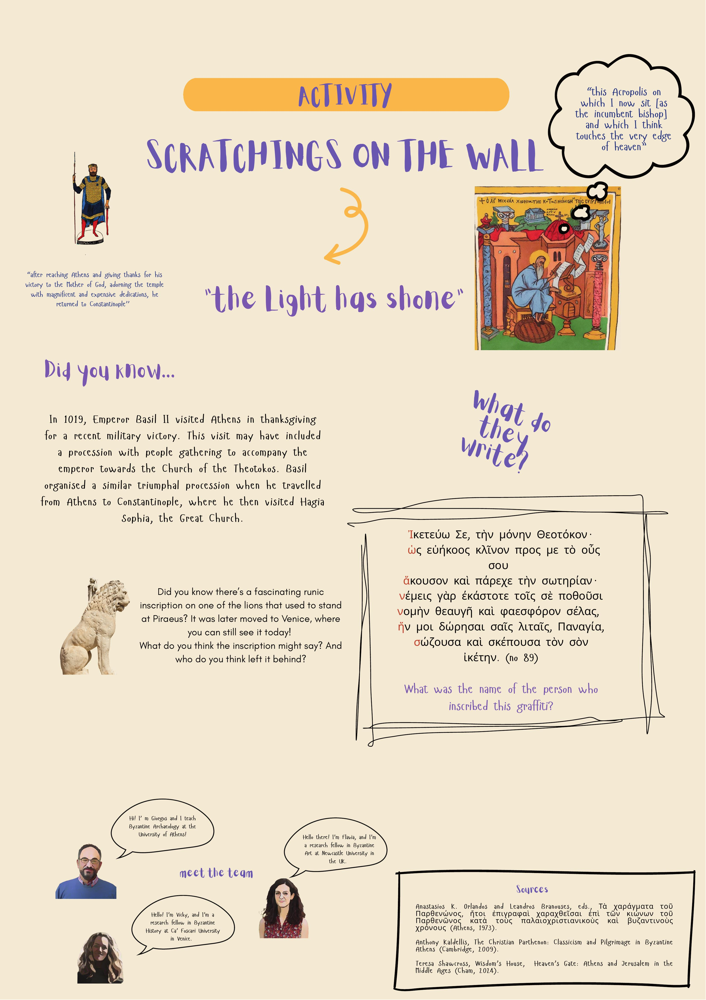
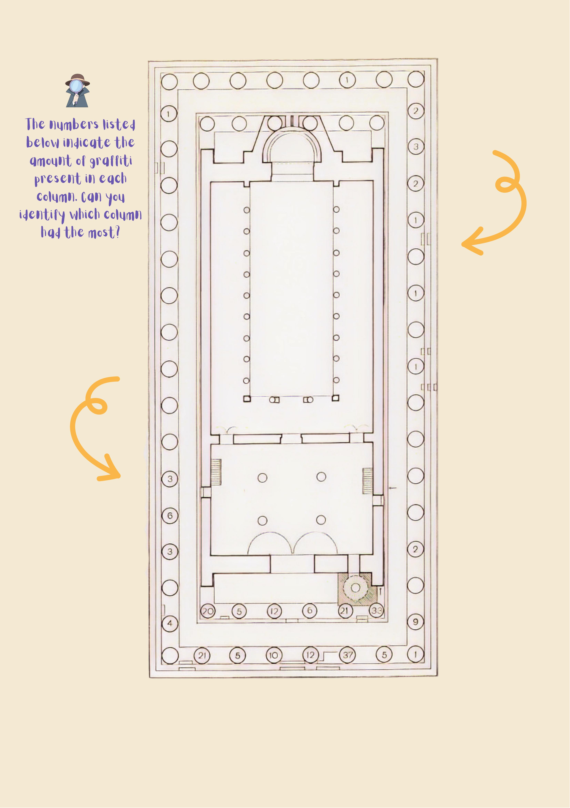
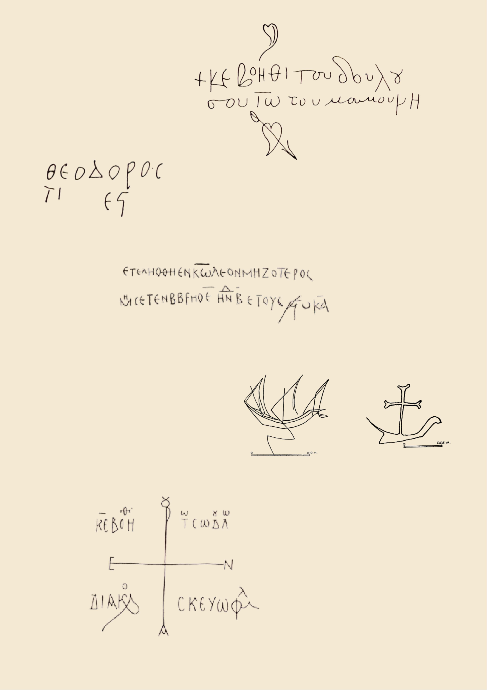

Beyond Ability
Multi-sensory and tactile engagement, adaptable formats designed and delivered for varied learning needs and attention profiles. We treat physical, sensory and cognitive needs as central design considerations — never edge cases.
Transforming how the past is encountered, taught, and valued beyond academia — designed from the ground up to be open to every learner.
The Programme
This programme sets out to transform how the past is encountered, taught, and valued beyond academia, making inclusion its founding principle rather than an afterthought — ensuring that everyone, whatever their ability, background, or circumstance, can access history on equal terms.
Inclusion sits at the core of every stage of the programme. Working in partnership with disabled learners, educators, and communities from diverse cultural and socio-economic circumstances, we co-design activities and resources built around the principles of universal design: multi-sensory and tactile engagement with material culture, adaptable formats designed and delivered for varied learning needs, and flexible delivery that meets schools and community spaces where they are. We treat physical, sensory, cognitive, linguistic, and socio-economic needs not as edge cases but as central design considerations, ensuring that engagement with the past is a shared right open to all.
Our Ambition
By embedding inclusion into the design and delivery of every activity, we seek to nurture a new generation of learners of all abilities and from all backgrounds and circumstances, who study, question, and care about the past. In doing so, developing a new standard for inclusive public history and demonstrating the enduring vitality and public value of the humanities.
Three Commitments
Multi-sensory and tactile engagement, adaptable formats designed and delivered for varied learning needs and attention profiles. We treat physical, sensory and cognitive needs as central design considerations — never edge cases.
We work in partnership with communities from diverse cultural, linguistic and socio-economic backgrounds, so that engagement with the past is a shared right open to all.
Flexible delivery meets schools and community spaces where they are — removing the practical limits of place, resource and prior knowledge that keep heritage out of reach.
Ongoing Projects
In collaboration with specialists in ADHD, autism and other neurodevelopmental needs and disabilities, we are developing a series of resource packs for primary and secondary history after-school clubs. Designed to enrich and complement existing curricula, these packs offer students exciting new ways to engage with the Byzantine past — hands-on, multi-sensory and adaptable activities created with diverse learning needs and disabilities in mind from the outset.
Each pack is paired with training workshops for teachers and educators, equipping them to lead the activities with confidence and embed inclusive practice in their own settings.
This strand of the programme is dedicated to making the medieval Byzantine world fully accessible to blind and visually impaired students in special schools. Working in partnership with specialist educators, accessibility experts and the pupils themselves, we co-design history activities that lead with touch, sound and narrative rather than sight: tactile replicas of Byzantine coins, mosaics, manuscripts and architectural forms; immersive audio storytelling and soundscapes; braille and audio-described materials; and richly descriptive, dialogue-driven sessions.
The aim is not to translate a visual subject into a lesser version of itself, but to reimagine how the past can be encountered — demonstrating that history is just as vivid through the hands and the ear as through the eye.
Past Projects
Created and delivered with the British School at Athens, this activity introduced families and younger audiences to the Byzantine chapter of the Parthenon — its transformation from an ancient temple into the church of Panagia Atheniotissa. Over 500 people visited on the day, combining storytelling, visual materials and hands-on engagement with historical evidence.
Participants explored the medieval graffiti scratched onto the Parthenon's columns, discussed them with the team, and made their own graffiti in clay. Feedback was overwhelmingly positive, with attendees singling out the activity's organisation, free entry, accessibility and adaptability for audiences of all ages.
A collaboration with Dr Vicky Manolopoulou, Dr Flavia Vanni and Prof. Georgios Pallis, with 3D reconstruction by D. Tsalkanis. Supported by the Society for the Promotion of Byzantine Studies (SPBS).
Explore the activity poster




Families and visitors of all ages explored the Byzantine Parthenon, handled tactile reproductions, and made their own clay graffiti.
Questionnaire data showed clear evidence of learning impact and change in understanding. Participants consistently reported that the activity significantly increased their understanding of the Parthenon's different historical phases, including the Byzantine period as a vital, often overlooked part of history.
To what extent has this activity changed your understanding of the Parthenon's role in Byzantine Athens?
Has learning about the Byzantine Parthenon made you think differently about the Acropolis or Athens today?
We love Byzantium!
Excellent presentation, a lot of research work has gone into the findings and still continues to resolve more mysteries.
I didn't know that the Parthenon was converted into a church. Yes, it changed my thinking a lot!
They never refer to the Parthenon between the Ancient period and the Ottoman period in schoolbooks. It was nice that we referred to this period.
There is not only 500 BC in Athens!
Very good idea for schools!
Extremely interesting information about the graffiti of the Parthenon! Thank you!
I love it! Beautiful event, classy location, friendly team.
Who We Are
British Academy Postdoctoral Fellow, Newcastle University
A specialist in Byzantine material culture and art history, Flavia's research includes developing inclusive strategies to communicate and teach cultural heritage to blind and visually impaired people. She has created tactile and synaesthetic visitor paths to medieval wall paintings and led workshops training museum guides in tactile and multi-sensory visits.
Research Fellow, Ca' Foscari University of Venice
A specialist in the history and archaeology of Byzantine landscapes, Vicky's research spans landscape studies, environmental humanities and the history of emotions. Dedicated to maximising research impact beyond academia, she is actively involved in outreach and public engagement, community-facing case studies, and initiatives aimed at widening participation.
Contact Us
We welcome schools, community organisations, museums, funders and disabled-led groups who share our commitment to inclusive public history.